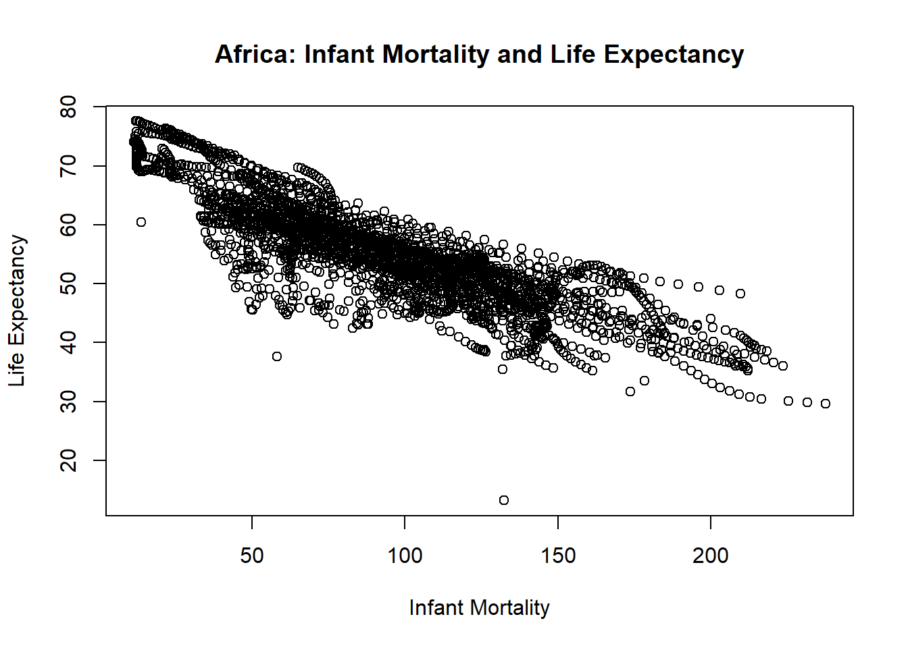
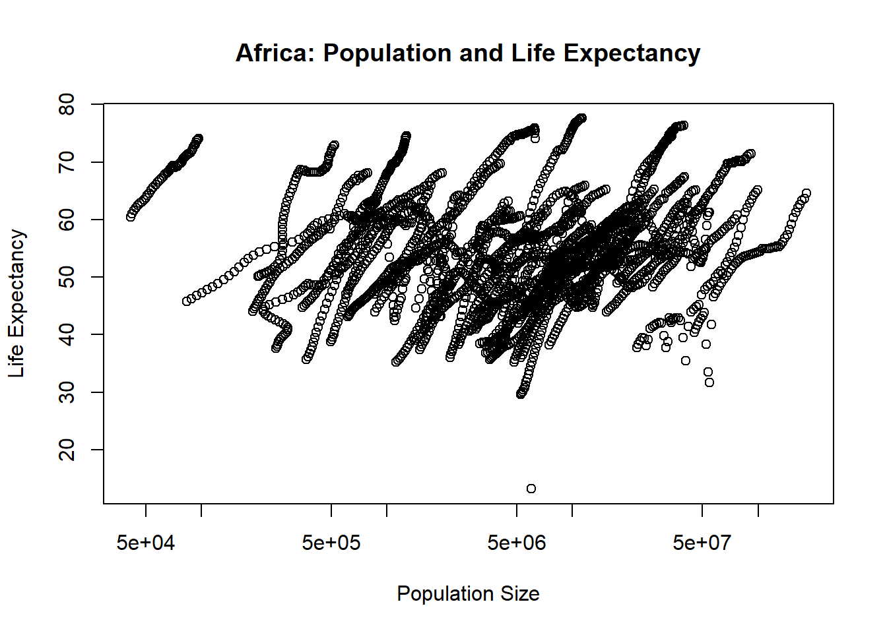
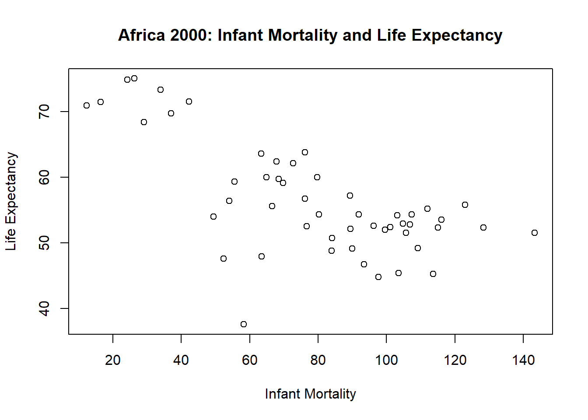
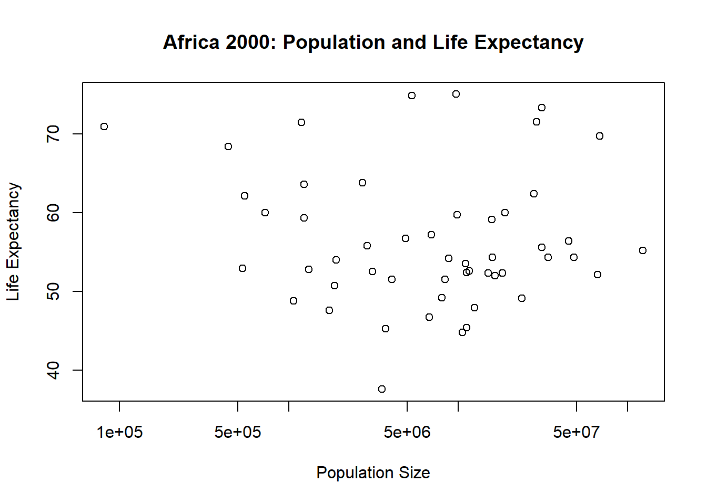

# DA 6833 02T
# Summer 2024
# School of Data Science
# University of Texas at San Antonio
# Zane Chumley
# Banner ID: @01318598
# UTSAid: wgs999R Coding Exercise
Assignment #3: Coding Basics
Startup
Identification
Load Libraries as Needed
library(readxl) #for loading Excel files
library(dplyr) #for data processing/cleaning
Attaching package: 'dplyr'The following objects are masked from 'package:stats':
filter, lagThe following objects are masked from 'package:base':
intersect, setdiff, setequal, unionlibrary(tidyr) #for data processing/cleaning
library(skimr) #for nice visualization of data
library(here) #to set pathshere() starts at C:/Users/Zane/Documents/UTSA-MSDA/Coursework/2024-02 Summer/DA 6833 02T - Thursday 6pm/P2-Portfolio Clone/zanechumley-P2-portfoliolibrary(dslabs) #for data used in this assignmentLoad and explore ‘gapminder’ dataset
# review help file for gapminder dataset
# after the 20th time, opening this file just got excessively and needlessly annoying
# help(gapminder)
# assign dataset to internal variable
A03 <- gapminder
# look at the data's structure
str(A03)'data.frame': 10545 obs. of 9 variables:
$ country : Factor w/ 185 levels "Albania","Algeria",..: 1 2 3 4 5 6 7 8 9 10 ...
$ year : int 1960 1960 1960 1960 1960 1960 1960 1960 1960 1960 ...
$ infant_mortality: num 115.4 148.2 208 NA 59.9 ...
$ life_expectancy : num 62.9 47.5 36 63 65.4 ...
$ fertility : num 6.19 7.65 7.32 4.43 3.11 4.55 4.82 3.45 2.7 5.57 ...
$ population : num 1636054 11124892 5270844 54681 20619075 ...
$ gdp : num NA 1.38e+10 NA NA 1.08e+11 ...
$ continent : Factor w/ 5 levels "Africa","Americas",..: 4 1 1 2 2 3 2 5 4 3 ...
$ region : Factor w/ 22 levels "Australia and New Zealand",..: 19 11 10 2 15 21 2 1 22 21 ...# look at a summary of the data
summary(A03) country year infant_mortality life_expectancy
Albania : 57 Min. :1960 Min. : 1.50 Min. :13.20
Algeria : 57 1st Qu.:1974 1st Qu.: 16.00 1st Qu.:57.50
Angola : 57 Median :1988 Median : 41.50 Median :67.54
Antigua and Barbuda: 57 Mean :1988 Mean : 55.31 Mean :64.81
Argentina : 57 3rd Qu.:2002 3rd Qu.: 85.10 3rd Qu.:73.00
Armenia : 57 Max. :2016 Max. :276.90 Max. :83.90
(Other) :10203 NA's :1453
fertility population gdp continent
Min. :0.840 Min. :3.124e+04 Min. :4.040e+07 Africa :2907
1st Qu.:2.200 1st Qu.:1.333e+06 1st Qu.:1.846e+09 Americas:2052
Median :3.750 Median :5.009e+06 Median :7.794e+09 Asia :2679
Mean :4.084 Mean :2.701e+07 Mean :1.480e+11 Europe :2223
3rd Qu.:6.000 3rd Qu.:1.523e+07 3rd Qu.:5.540e+10 Oceania : 684
Max. :9.220 Max. :1.376e+09 Max. :1.174e+13
NA's :187 NA's :185 NA's :2972
region
Western Asia :1026
Eastern Africa : 912
Western Africa : 912
Caribbean : 741
South America : 684
Southern Europe: 684
(Other) :5586 # look at the data's type
class(A03)[1] "data.frame"Processing data
African continent data
# create new data.frame with African data only
A03.africadata <- A03[A03$continent=="Africa",]
# look at the subset's structure
str(A03.africadata)'data.frame': 2907 obs. of 9 variables:
$ country : Factor w/ 185 levels "Albania","Algeria",..: 2 3 18 22 26 27 29 31 32 33 ...
$ year : int 1960 1960 1960 1960 1960 1960 1960 1960 1960 1960 ...
$ infant_mortality: num 148 208 187 116 161 ...
$ life_expectancy : num 47.5 36 38.3 50.3 35.2 ...
$ fertility : num 7.65 7.32 6.28 6.62 6.29 6.95 5.65 6.89 5.84 6.25 ...
$ population : num 11124892 5270844 2431620 524029 4829291 ...
$ gdp : num 1.38e+10 NA 6.22e+08 1.24e+08 5.97e+08 ...
$ continent : Factor w/ 5 levels "Africa","Americas",..: 1 1 1 1 1 1 1 1 1 1 ...
$ region : Factor w/ 22 levels "Australia and New Zealand",..: 11 10 20 17 20 5 10 20 10 10 ...# look at a summary of the subset
summary(A03.africadata) country year infant_mortality life_expectancy
Algeria : 57 Min. :1960 Min. : 11.40 Min. :13.20
Angola : 57 1st Qu.:1974 1st Qu.: 62.20 1st Qu.:48.23
Benin : 57 Median :1988 Median : 93.40 Median :53.98
Botswana : 57 Mean :1988 Mean : 95.12 Mean :54.38
Burkina Faso: 57 3rd Qu.:2002 3rd Qu.:124.70 3rd Qu.:60.10
Burundi : 57 Max. :2016 Max. :237.40 Max. :77.60
(Other) :2565 NA's :226
fertility population gdp continent
Min. :1.500 Min. : 41538 Min. :4.659e+07 Africa :2907
1st Qu.:5.160 1st Qu.: 1605232 1st Qu.:8.373e+08 Americas: 0
Median :6.160 Median : 5570982 Median :2.448e+09 Asia : 0
Mean :5.851 Mean : 12235961 Mean :9.346e+09 Europe : 0
3rd Qu.:6.860 3rd Qu.: 13888152 3rd Qu.:6.552e+09 Oceania : 0
Max. :8.450 Max. :182201962 Max. :1.935e+11
NA's :51 NA's :51 NA's :637
region
Eastern Africa :912
Western Africa :912
Middle Africa :456
Northern Africa :342
Southern Africa :285
Australia and New Zealand: 0
(Other) : 0 African continent data - just Infant mortality and Life expectancy
#Create new African data.frame with only infant mortality and life expectancy
A03.africadata.infantlife <- A03.africadata[, c('infant_mortality', 'life_expectancy')]
# look at the subset's structure
str(A03.africadata.infantlife)'data.frame': 2907 obs. of 2 variables:
$ infant_mortality: num 148 208 187 116 161 ...
$ life_expectancy : num 47.5 36 38.3 50.3 35.2 ...# look at a summary of the subset
summary(A03.africadata.infantlife) infant_mortality life_expectancy
Min. : 11.40 Min. :13.20
1st Qu.: 62.20 1st Qu.:48.23
Median : 93.40 Median :53.98
Mean : 95.12 Mean :54.38
3rd Qu.:124.70 3rd Qu.:60.10
Max. :237.40 Max. :77.60
NA's :226 African continent data - just Population and Life expectancy
#Create new African data.frame with only Population and life expectancy
A03.africadata.poplife <- A03.africadata[, c('population', 'life_expectancy')]
# look at the subset's structure
str(A03.africadata.poplife)'data.frame': 2907 obs. of 2 variables:
$ population : num 11124892 5270844 2431620 524029 4829291 ...
$ life_expectancy: num 47.5 36 38.3 50.3 35.2 ...# look at a summary of the subset
summary(A03.africadata.poplife) population life_expectancy
Min. : 41538 Min. :13.20
1st Qu.: 1605232 1st Qu.:48.23
Median : 5570982 Median :53.98
Mean : 12235961 Mean :54.38
3rd Qu.: 13888152 3rd Qu.:60.10
Max. :182201962 Max. :77.60
NA's :51 Plotting Data
Infant Mortality and Life Expectancy
# Life expectancy as a function of infant mortality
plot(life_expectancy~infant_mortality
, data=A03.africadata.infantlife
, main="Africa: Infant Mortality and Life Expectancy"
, xlab="Infant Mortality"
, ylab="Life Expectancy"
)
Population and Life Expectancy
# Life expectancy as a function of population size
plot(life_expectancy~population
, data=A03.africadata.poplife
, main="Africa: Population and Life Expectancy"
, xlab="Population Size"
, log="x"
, ylab="Life Expectancy"
)
More data processing
Identifying African data with missing values for infant mortality
# Get African rows with missing values for infant mortality
A03.africadata.noinfants <- A03.africadata[A03.africadata$infant_mortality=="NA",]
# look at the subset's structure
str(A03.africadata.noinfants)'data.frame': 226 obs. of 9 variables:
$ country : Factor w/ 185 levels "Albania","Algeria",..: NA NA NA NA NA NA NA NA NA NA ...
$ year : int NA NA NA NA NA NA NA NA NA NA ...
$ infant_mortality: num NA NA NA NA NA NA NA NA NA NA ...
$ life_expectancy : num NA NA NA NA NA NA NA NA NA NA ...
$ fertility : num NA NA NA NA NA NA NA NA NA NA ...
$ population : num NA NA NA NA NA NA NA NA NA NA ...
$ gdp : num NA NA NA NA NA NA NA NA NA NA ...
$ continent : Factor w/ 5 levels "Africa","Americas",..: NA NA NA NA NA NA NA NA NA NA ...
$ region : Factor w/ 22 levels "Australia and New Zealand",..: NA NA NA NA NA NA NA NA NA NA ...# look at a summary of the subset
summary(A03.africadata.noinfants) country year infant_mortality life_expectancy
Albania : 0 Min. : NA Min. : NA Min. : NA
Algeria : 0 1st Qu.: NA 1st Qu.: NA 1st Qu.: NA
Angola : 0 Median : NA Median : NA Median : NA
Antigua and Barbuda: 0 Mean :NaN Mean :NaN Mean :NaN
Argentina : 0 3rd Qu.: NA 3rd Qu.: NA 3rd Qu.: NA
(Other) : 0 Max. : NA Max. : NA Max. : NA
NA's :226 NA's :226 NA's :226 NA's :226
fertility population gdp continent
Min. : NA Min. : NA Min. : NA Africa : 0
1st Qu.: NA 1st Qu.: NA 1st Qu.: NA Americas: 0
Median : NA Median : NA Median : NA Asia : 0
Mean :NaN Mean :NaN Mean :NaN Europe : 0
3rd Qu.: NA 3rd Qu.: NA 3rd Qu.: NA Oceania : 0
Max. : NA Max. : NA Max. : NA NA's :226
NA's :226 NA's :226 NA's :226
region
Australia and New Zealand: 0
Caribbean : 0
Central America : 0
Central Asia : 0
Eastern Africa : 0
(Other) : 0
NA's :226 # This is not good ... all the values are "NA", not just those for $infant_mortalityIdentify years where infant mortality is missing from African data
Garbage in, garbage out … all the $year values are inexplicably “NA”
# Which years of African data are missing infant mortality rates?
A03.africadata.noinfants.years <- table(A03.africadata.noinfants$year)
# look at the subset's structure
str(A03.africadata.noinfants.years) 'table' int[0 (1d)]
- attr(*, "dimnames")=List of 1
..$ : NULL# look at a summary of the subset
summary(A03.africadata.noinfants.years)Number of cases in table: 0
Number of factors: 1 We will focus on the year 2000
# Get African rows for the year 2000
A03.africadata.Y2K <- A03.africadata[A03.africadata$year=="2000",]
# look at the subset's structure
str(A03.africadata.Y2K)'data.frame': 51 obs. of 9 variables:
$ country : Factor w/ 185 levels "Albania","Algeria",..: 2 3 18 22 26 27 29 31 32 33 ...
$ year : int 2000 2000 2000 2000 2000 2000 2000 2000 2000 2000 ...
$ infant_mortality: num 33.9 128.3 89.3 52.4 96.2 ...
$ life_expectancy : num 73.3 52.3 57.2 47.6 52.6 46.7 54.3 68.4 45.3 51.5 ...
$ fertility : num 2.51 6.84 5.98 3.41 6.59 7.06 5.62 3.7 5.45 7.35 ...
$ population : num 31183658 15058638 6949366 1736579 11607944 ...
$ gdp : num 5.48e+10 9.13e+09 2.25e+09 5.63e+09 2.61e+09 ...
$ continent : Factor w/ 5 levels "Africa","Americas",..: 1 1 1 1 1 1 1 1 1 1 ...
$ region : Factor w/ 22 levels "Australia and New Zealand",..: 11 10 20 17 20 5 10 20 10 10 ...# look at a summary of the subset
summary(A03.africadata.Y2K) country year infant_mortality life_expectancy
Algeria : 1 Min. :2000 Min. : 12.30 Min. :37.60
Angola : 1 1st Qu.:2000 1st Qu.: 60.80 1st Qu.:51.75
Benin : 1 Median :2000 Median : 80.30 Median :54.30
Botswana : 1 Mean :2000 Mean : 78.93 Mean :56.36
Burkina Faso: 1 3rd Qu.:2000 3rd Qu.:103.30 3rd Qu.:60.00
Burundi : 1 Max. :2000 Max. :143.30 Max. :75.00
(Other) :45
fertility population gdp continent
Min. :1.990 Min. : 81154 Min. :2.019e+08 Africa :51
1st Qu.:4.150 1st Qu.: 2304687 1st Qu.:1.274e+09 Americas: 0
Median :5.550 Median : 8799165 Median :3.238e+09 Asia : 0
Mean :5.156 Mean : 15659800 Mean :1.155e+10 Europe : 0
3rd Qu.:5.960 3rd Qu.: 17391242 3rd Qu.:8.654e+09 Oceania : 0
Max. :7.730 Max. :122876723 Max. :1.329e+11
region
Eastern Africa :16
Western Africa :16
Middle Africa : 8
Northern Africa : 6
Southern Africa : 5
Australia and New Zealand: 0
(Other) : 0 More Plotting Data
Infant Mortality and Life Expectancy - Year 2000
# Life expectancy as a function of infant mortality
plot(life_expectancy~infant_mortality
, data=A03.africadata.Y2K
, main="Africa 2000: Infant Mortality and Life Expectancy"
, xlab="Infant Mortality"
, ylab="Life Expectancy"
)
Population and Life Expectancy - Year 2000
# Life expectancy as a function of population size
plot(life_expectancy~population
, data=A03.africadata.Y2K
, main="Africa 2000: Population and Life Expectancy"
, xlab="Population Size"
, log="x"
, ylab="Life Expectancy"
)
Simple model fits - Africa 2000
Fitting the models
# Fit life expectancy as the outcome, and infant mortality as the predictor.
A03.fit1 <- lm(life_expectancy~infant_mortality
, data=A03.africadata.Y2K
)
# Fit life expectancy as the outcome, and population as the predictor.
A03.fit2 <- lm(life_expectancy~population
, data=A03.africadata.Y2K
)Examining the summaries for the models
# Summary where infant mortality is the predictor
summary(A03.fit1)
Call:
lm(formula = life_expectancy ~ infant_mortality, data = A03.africadata.Y2K)
Residuals:
Min 1Q Median 3Q Max
-22.6651 -3.7087 0.9914 4.0408 8.6817
Coefficients:
Estimate Std. Error t value Pr(>|t|)
(Intercept) 71.29331 2.42611 29.386 < 2e-16 ***
infant_mortality -0.18916 0.02869 -6.594 2.83e-08 ***
---
Signif. codes: 0 '***' 0.001 '**' 0.01 '*' 0.05 '.' 0.1 ' ' 1
Residual standard error: 6.221 on 49 degrees of freedom
Multiple R-squared: 0.4701, Adjusted R-squared: 0.4593
F-statistic: 43.48 on 1 and 49 DF, p-value: 2.826e-08# Summary where population is the predictor
summary(A03.fit2)
Call:
lm(formula = life_expectancy ~ population, data = A03.africadata.Y2K)
Residuals:
Min 1Q Median 3Q Max
-18.429 -4.602 -2.568 3.800 18.802
Coefficients:
Estimate Std. Error t value Pr(>|t|)
(Intercept) 5.593e+01 1.468e+00 38.097 <2e-16 ***
population 2.756e-08 5.459e-08 0.505 0.616
---
Signif. codes: 0 '***' 0.001 '**' 0.01 '*' 0.05 '.' 0.1 ' ' 1
Residual standard error: 8.524 on 49 degrees of freedom
Multiple R-squared: 0.005176, Adjusted R-squared: -0.01513
F-statistic: 0.2549 on 1 and 49 DF, p-value: 0.6159Drawing conclusions about the models
Regarding Infant Mortality:
- Our NULL hypothesis is that infant mortality is not a predictor of life expectancy.
- Our alternative hypothesis is that infant mortality is a predictor.
Given the p-value of 2.826e-08 is well below all typical significance levels of 0.10, 0.05, and 0.01, we can reject the NULL hypothesis and conclude infant mortality is a predictor of life expectancy.
Regarding Population:
- Our NULL hypothesis is that population is not a predictor of life expectancy.
- Our alternative hypothesis is that population is a predictor.
Given the p-value of 0.6159 is well above all typical significance levels of 0.10, 0.05, and 0.01, we fail to reject the NULL hypothesis and conclude population is not a predictor of life expectancy.
Assignment 3 Concluded
# Go Roadrunners!